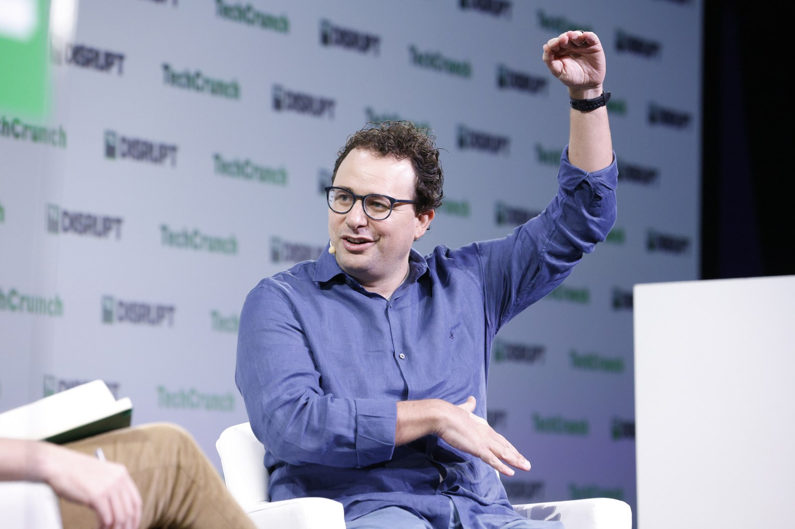
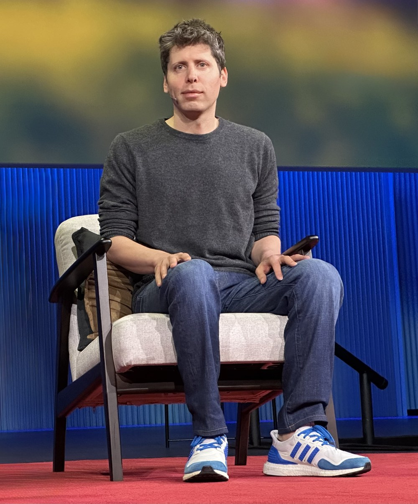
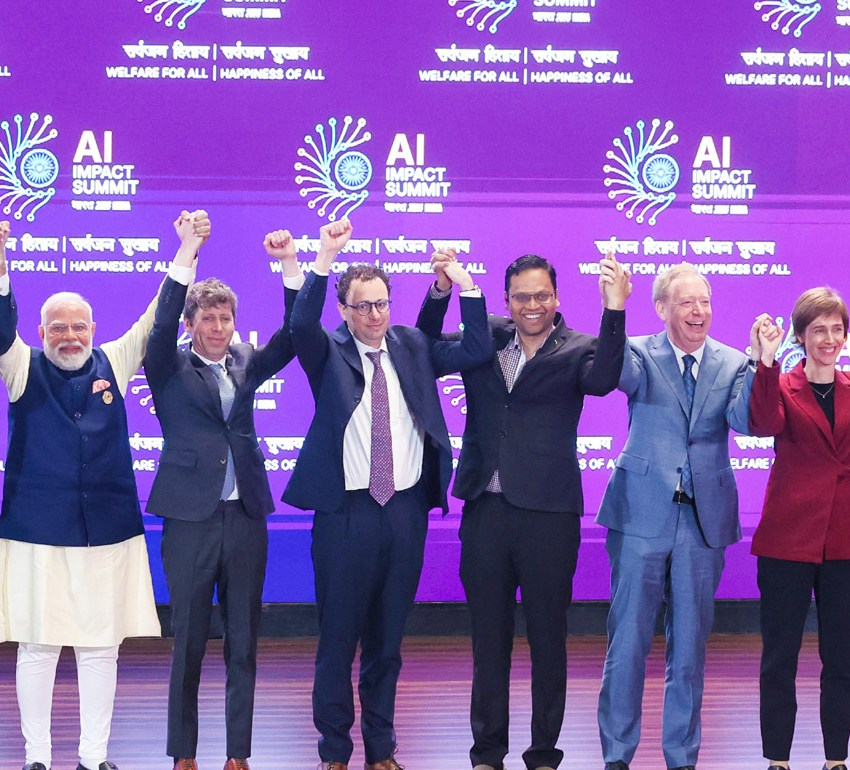

물리학자에서 AI CEO로
물리 올림피아드, 생물물리학 박사, Google Brain, OpenAI를 거쳐 Anthropic을 만들었습니다.
아모데이는 GPT‑2·GPT‑3를 만든 OpenAI 핵심 연구자였습니다. 그런데 2020년 동료들과 회사를 떠났고, 2021년 친동생 다니엘라와 Anthropic을 세웠습니다. 이 정도면 평범한 퇴사 스토리가 아닙니다 ㅎㅎ

물리 올림피아드, 생물물리학 박사, Google Brain, OpenAI를 거쳐 Anthropic을 만들었습니다.
당시 공식 발표는 우호적이었지만, 이후 보도는 안전·상업화·리더십 갈등이 누적됐다고 전합니다.
AI를 얼마나 빨리 출시하고, 누가 통제하며, 어디까지 허용할지를 놓고 벌이는 산업의 경쟁입니다.
아버지의 병을 계기로 이론물리에서 생물학으로 옮겼고, 인간이 풀기 어려운 복잡성을 AI로 압축하고 싶어 했습니다. 그래서 능력 경쟁도 믿고, 안전 연구도 동시에 밀어붙입니다.
둘은 모두 강력한 AI가 빠르게 올 것이라고 믿습니다. 차이는 가속 페달을 밟느냐가 아니라, 브레이크를 어디에 달고 누가 운전대를 쥐느냐에 가깝습니다.
미국 물리 올림피아드 팀 명단. [출처 1]
Princeton 박사와 Hertz Thesis Prize. [출처 2]
사람 평가 약 1시간 미만으로 백플립 학습. [출처 6]
다리오·다니엘라가 이끈 AI 안전 연구 회사. [출처 8]
연대기를 따라가면 아모데이의 선택이 갑자기 튀어나온 것이 아니라는 점이 보입니다. 과학, 질병, AI 안전, 조직 통제라는 선이 계속 이어집니다.
WIRED와 Big Technology 프로필에 따르면 그는 숫자와 물리에 강하게 끌린 ‘science kid’였습니다. 어린 시절 담요 대신 계산기를 두드렸다는 가족 일화도 전해집니다. [출처 14]
AAPT의 2000년 팀 명단에 Dario Amodei가 올라 있습니다. 훗날 AI CEO가 되기 전, 출발점은 말 그대로 물리였습니다. [출처 1]
Big Technology가 확인한 학보 기고에서 그는 전쟁에 반대하면서도 행동하지 않는 동료들을 강하게 비판했습니다. 기술자이기 전에 ‘문제가 보이면 개입해야 한다’는 성향이 먼저 보입니다. [출처 15]
희귀 질환으로 아버지를 잃은 뒤 Princeton 대학원 연구 방향을 생물학과 질병 문제로 바꿨다고 전해집니다. 몇 년 뒤 치료 성과가 크게 개선됐다는 사실은 그의 ‘과학을 더 빨리 진전시켜야 한다’는 집착을 강화했습니다. [출처 15]
WIRED에 따르면 Rosewood Hotel의 OpenAI 구상 만찬은 유명 투자자와 창업가가 앞에 보였고 연구 목표는 흐릿해 보여 처음에는 매력을 느끼지 못했습니다. 하지만 강한 연구진이 모이자 결국 합류했습니다. [출처 14]
아모데이·Paul Christiano·DeepMind 연구진은 약 900회의 비교 피드백, 사람 평가 1시간 미만으로 시뮬레이션 로봇에게 백플립을 학습시켰습니다. 오늘날 RLHF 계보의 중요한 장면입니다. [출처 6]
당시 OpenAI의 퇴사 공지는 거의 5년의 기여를 높이 평가했고, 아모데이 역시 같은 안전한 AGI 목표를 강조했습니다. 문서만 읽으면 불화는 보이지 않습니다. [출처 5]
다리오 CEO, 다니엘라 President 체제로 신뢰할 수 있고 해석 가능하며 조종 가능한 대규모 AI를 연구하겠다고 밝혔습니다. [출처 8]
Anthropic은 첫 Claude를 훈련했지만 제품 출시보다 안전 연구에 우선 사용했다고 밝혔습니다. 훗날 가장 많이 회자될 ‘놓친 선점 효과’이자 회사 철학의 증거가 됐습니다. [출처 9]
Reuters는 OpenAI가 Anthropic의 챗봇 작업 소식을 듣자 올트먼이 경쟁 제품을 빠르게 내놓도록 지시했고, 약 2주 뒤 ChatGPT가 출시됐다고 보도했습니다. 이 대목은 당사자 공식 발표가 아니라 복수 취재원 기반 보도입니다. [출처 11]
Notion·Quora·DuckDuckGo 등과 closed alpha를 거쳐 Claude와 Claude Instant가 공개됐습니다. [출처 10]
Reuters는 OpenAI 이사회가 아모데이와 두 연구소를 그의 리더십 아래 합치는 방안을 매우 짧게 논의했다고 보도했습니다. 성사되지 않았지만 OpenAI 내부의 감정을 더 악화시킨 사건으로 전해집니다. [출처 11]
생물학·신경과학·빈곤·평화·일과 의미를 AI가 크게 개선할 수 있다는 장문의 긍정 시나리오를 공개했습니다. 위험만 말하는 사람이 아니라는 반전입니다. [출처 16]
초기에는 Anthropic이 ChatGPT를 따라갔지만, Reuters는 2025년 말 코딩 도구 경쟁에서 흐름이 일부 뒤집혔다고 보도했습니다. 라이벌은 서로의 로드맵을 바꾸고 있습니다. [출처 11]
Anthropic은 ‘AI에 광고가 오지만 Claude에는 오지 않는다’는 취지의 광고를 내보냈고, 올트먼은 이를 기만적이라고 비판했습니다. 이제 연구 철학이 수백만 달러짜리 TV 광고가 됐습니다. [출처 13]
인도 AI 정상회의 단체 포즈에서 올트먼과 아모데이는 나란히 섰지만 서로 손을 연결하지 않았습니다. 올트먼은 나중에 무대에서 무엇을 해야 하는지 몰랐다고 설명했습니다. 화면은 설명보다 오래 남았습니다 ㅎㅎ [출처 12]
Reuters는 두 회사의 경쟁이 챗봇 출시, 코딩 제품, 기업 시장, 상장 전략까지 움직이는 전면전이 됐다고 정리했습니다. [출처 11]
농담을 억지로 붙일 필요가 없습니다. 실제 에피소드가 이미 충분히 특이합니다.
또래 아이들이 담요를 붙잡을 때 계산기 버튼을 두드렸다는 가족 일화가 전해집니다. 약간 과장된 가족 전설처럼 들리지만, 훗날 물리 올림피아드 팀까지 갔으니 방향은 맞았습니다. [출처 14]
“수학을 좋아했다” 수준이 아닙니다. AAPT의 2000년 미국 물리 올림피아드 팀 명단에 이름이 남아 있습니다. [출처 1]
이라크전에 반대하면서도 행동하지 않는 동료들을 학보에서 몰아붙였습니다. 훗날 AI 위험을 보며 “일단 지켜보자”보다 회사를 새로 만드는 쪽을 택한 성격과 묘하게 연결됩니다. [출처 15]
아버지를 잃은 뒤 이론물리에서 생물학으로 옮겼고, 치료가 조금만 빨리 나왔더라면 더 많은 생명을 구했을 것이라는 생각이 남았습니다. 그래서 그는 안전을 말하면서도 과학 발전을 늦추자는 평가에는 강하게 반발합니다. [출처 15]
유명 투자자와 창업가가 눈에 띄고 연구 목표가 명확하지 않아 처음에는 설득되지 않았다고 회고했습니다. 그런데 몇 달 뒤 좋은 연구자들이 모이자 합류합니다. 사람보다 연구팀을 본 셈입니다. [출처 14]
사람이 두 영상 중 더 나은 쪽만 고르는 방식으로 로봇을 훈련했습니다. 약 900번의 선택과 1시간 미만의 평가로 백플립을 배웠습니다. 오늘날 챗봇 피드백 버튼의 먼 조상 같은 장면입니다. [출처 6]
2022년 봄 첫 모델을 훈련했지만 안전 연구에 먼저 썼습니다. 결과적으로 ChatGPT가 시장의 이름을 가져갔습니다. 제품팀 입장에서는 머리를 잡을 장면이고, Anthropic 입장에서는 회사 철학을 증명한 장면입니다. [출처 9]
WIRED는 어린 시절 다리오와 다니엘라가 세계를 구하는 놀이를 했다고 전합니다. 훗날 두 사람은 CEO와 President로 같은 회사를 세웠습니다. 어린이 놀이가 법인 등기까지 간 드문 사례입니다 ㅎㅎ [출처 14]
“도머”라고 보기에는 너무 낙관적이고, “무조건 가속”이라고 보기에는 브레이크에 집착합니다. 아모데이는 두 극단 사이에서 가장 비싼 회사를 직접 만든 사람입니다.
Report Hub 해석 · 근거: 경력, 공식 에세이, 회사 전략공식 퇴사문은 아름다웠습니다. 하지만 이후 경쟁이 제품, 조직, 광고, 국방 정책까지 번지면서 감정과 철학이 함께 드러났습니다.
OpenAI는 아모데이의 GPT‑2·GPT‑3 기여를 높이 평가했고, 올트먼은 새 프로젝트의 성공을 빌었습니다. 아모데이도 안전한 AGI라는 공동 목표를 강조했습니다.
WIRED와 Reuters는 창업진이 올트먼 체제에서 안전 문제를 해결하기 어렵다고 봤고, 퇴사가 그의 접근에 대한 반박으로 받아들여졌다고 전했습니다.
2022년 봄 모델을 훈련하고도 안전 연구에 우선 사용했다고 공식 설명합니다.
Reuters는 Anthropic 챗봇 소문이 ChatGPT의 빠른 공개를 촉진했다고 보도했습니다.
Public Benefit Corporation 구조와 해석 가능성·조종 가능성 연구를 전면에 둡니다.
OpenAI는 배포를 통해 안전 경험을 쌓는다는 논리와 빠른 제품화를 병행해왔습니다.
올트먼 해임 직후 이사회가 아모데이 지도 아래 합병을 아주 잠깐 검토했다고 Reuters가 보도했습니다.
해당 소식이 OpenAI 내부 분노를 키웠고, 올트먼 복귀 뒤에도 감정이 남았다고 전해집니다.
2025년 말 코딩과 enterprise에서 강한 반격을 만들었다는 평가를 받았습니다.
대중 시장 선점 뒤 기업·코딩 제품에 더 많은 자원을 투입했습니다.
ChatGPT 광고 계획을 풍자했고, 국내 대규모 감시·현재 수준 완전 자율무기에는 제한을 요구했습니다.
올트먼은 Anthropic 광고가 OpenAI 계획을 왜곡한다고 공개 비판했습니다.
아래 사진은 CC BY 2.0 또는 Government Open Data License로 재사용 가능한 실제 사진입니다. 크롭·리사이즈 여부와 출처를 각각 표시했습니다.

2023년 TechCrunch Disrupt 무대의 다리오 아모데이. 이 사진은 썸네일에도 크롭·합성해 사용했습니다.
Photo: TechCrunch · CC BY 2.0 · 크롭/리사이즈/색상 오버레이 · [사진 출처 18]
2025년 TED의 샘 올트먼. 썸네일에서 아모데이 옆 작은 원형 인물로 사용했습니다.
Photo: Steve Jurvetson · CC BY 2.0 · 크롭/리사이즈/색상 오버레이 · [사진 출처 19]왼쪽부터 다리오 아모데이, 데미스 허사비스, 샘 올트먼이 영국 총리 관저에서 리시 수낵 총리와 만났습니다. 경쟁자들이지만 정부 앞에서는 같은 AI 산업 대표였습니다.
Photo: Simon Walker / No 10 Downing Street · CC BY 2.0 · 리사이즈 · [사진 출처 20]
모디 총리 오른쪽에 선 샘 올트먼과 다리오 아모데이. 주변 인사들은 손을 연결했지만 두 사람 사이는 비어 있습니다. 올트먼은 나중에 포즈를 이해하지 못했다고 설명했습니다. [기사 출처 12]
Photo: Prime Minister’s Office, Government of India · GODL-India · 두 CEO 중심 크롭/리사이즈 · [사진 출처 21]인물의 말보다 반복되는 선택을 보면 성격이 더 선명합니다.
아버지의 병과 뒤늦은 치료 혁신은 ‘과학이 더 빨랐어야 한다’는 감정을 남겼습니다. 안전은 감속이 아니라 실패 없이 가속하기 위한 장치에 가깝습니다.
OpenAI 안에서 논쟁만 계속하기보다 동료들과 나와 Anthropic을 세웠습니다. 안 되는지 토론하기보다 구조를 다시 만든 사람입니다.
뒤처진 모델로는 프런티어 위험을 연구할 수 없다는 논리입니다. 그래서 Anthropic은 안전 연구소이면서 동시에 가장 공격적인 모델 회사 중 하나가 됐습니다.
Claude와 ChatGPT의 차이는 단순 benchmark 점수만으로 설명되지 않습니다. 출시 기준, 데이터 정책, 광고, 안전 제한, 기업 고객 우선순위가 실제 도입 경험을 바꿉니다.
한 공급자가 정책을 바꾸면 API 기능, 거절 기준, 데이터 처리, 가격, 지원이 동시에 변할 수 있습니다. 한국 기업은 모델 성능뿐 아니라 governance와 exit plan을 같이 사야 합니다.
브랜드를 가리고 한국어 문서·코딩·CS·법무 과제 50~100개를 같은 조건으로 비교합니다.
거절, 안전 경고, 도구 호출, 로그, 보존 기간을 모델별로 문서화합니다.
저비용 일반 업무, 고난도 추론, 민감 문서를 서로 다른 공급자에 배분합니다.
프롬프트·평가 세트·API 추상화를 분리해 CEO의 정책 변화가 곧 시스템 중단이 되지 않게 합니다.
두 CEO의 노선 차이는 가장 좋은 모델 하나를 고르는 문제가 아니라, 우리 회사가 어떤 통제권을 확보할지의 문제입니다.
정답·허용 오류·민감도를 정한 평가 세트를 만듭니다.
동일 프롬프트와 도구 조건에서 품질·비용·거절·속도를 측정합니다.
업무별 기본·대체 모델을 정하고 분기별 재평가합니다.
인물 콘텐츠는 한 장면이 전체 성격처럼 소비되기 쉽습니다. 그래서 아래 반론을 같이 남깁니다.